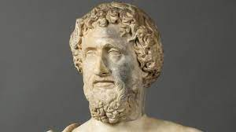
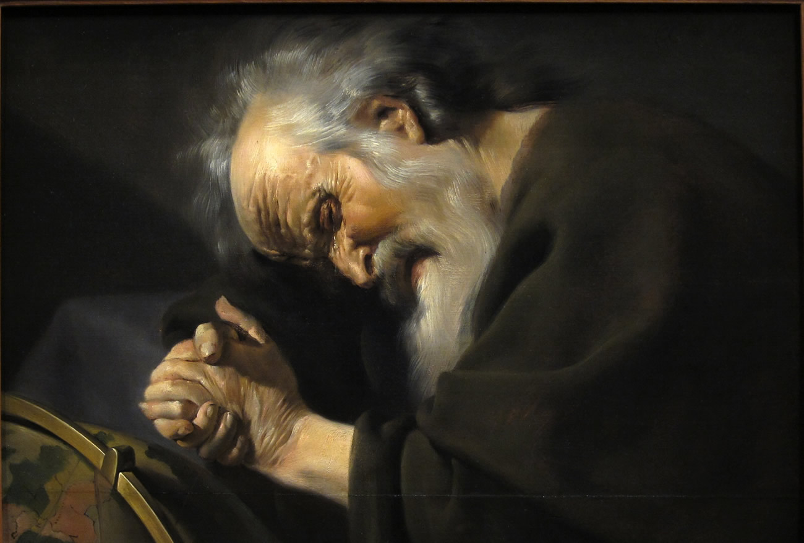
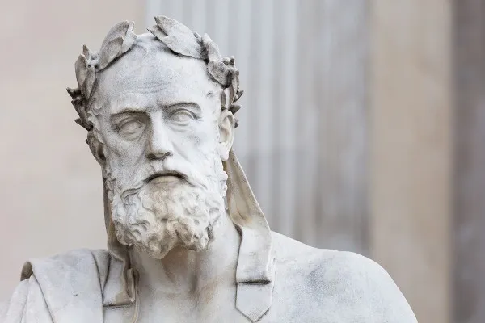
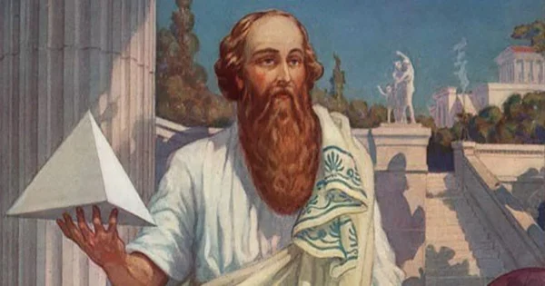
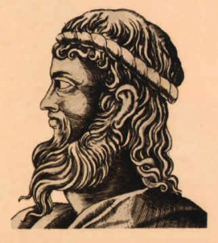
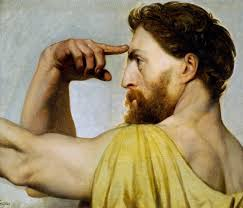
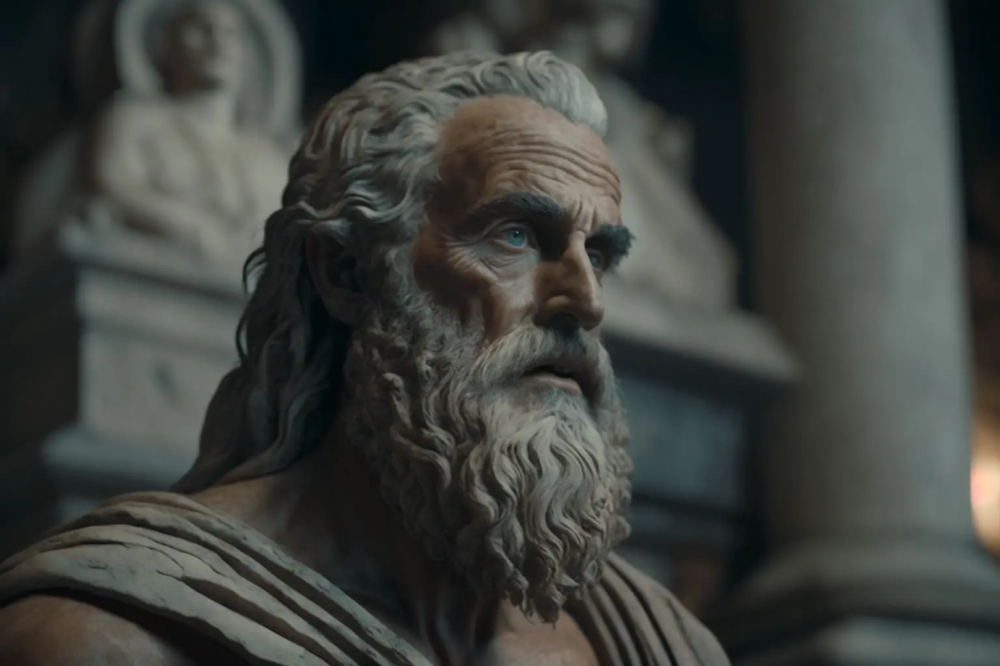

FILÓSOFOS PRÉ SOCRÁTICOS
Os filósofos pré-socráticos fazem parte do primeiro período da filosofia grega. Eles desenvolveram suas teorias do século VII ao V a.C., e recebem esse nome, pois são os filósofos que antecederam Sócrates. Esses pensadores buscavam nos elementos natureza as respostas sobre a origem do ser e do mundo. Focando principalmente nos aspectos da natureza, eram chamados de “filósofos da physis” ou "filósofos da natureza".Foram eles os responsáveis pela transição da consciência mítica para a consciência filosófica. Assim, buscaram dar uma explicação racional para a origem de todas as coisas. A mitologia grega explicava o universo através da cosmogonia (cosmo, "universo", e gónos, "gênese" ou "nascimento"). A cosmogonia dá sentido a tudo o que existe através da ideia de nascimento a partir de uma relação (sexual) entre os deuses. Os filósofos pré-socráticos abandonaram essa ideia e construíram a cosmologia, explicação do universo baseado no lógos ("argumentação", "lógica", "razão"). Os deuses deram lugar à natureza na compreensão sobre a origem das coisas. A filosofia nascida com esses primeiros filósofos deu origem a toda uma produção de conhecimento e de representação da realidade. Toda essa construção serviu como base para o desenvolvimento da cultura ocidental confira abaixo os principais filosofos pre socarticos.
Tales de Mileto
"Tales de Mileto é considerado o primeiro filósofo da tradição ocidental. Assim como os outros pensadores do período pré-socrático, Tales buscava compreender qual é verdadeira origem do Universo, refutando a mitologia grega, que apresentava narrativas originárias que explicavam de maneira fantasiosa o modo como o Universo tinha sido formado." "Estima-se que ele tenha dado origem a uma busca pelo elemento originário (que os gregos chamavam de arché ou arkhé) da natureza (que, no vocabulário grego, era representada pela palavra physis). Após incansáveis observações, o filósofo especulou que a origem de tudo estaria na água. Esse primeiro impulso da Filosofia, por estudar e observar o Universo (cosmos), ficou conhecido como cosmologia. Essa afirmação de Tales deu origem a todo o conhecimento posterior, pois ela deu origem a um processo de tentativa de entendimento racional da natureza, o que fez nascer a filosofia. A filosofia, na época, consistia em um conjunto de conhecimentos cultivados sistematicamente, que compreendiam Ciências Naturais e Matemática. Mais tarde foram incorporadas à filosofia a ética, a política, a metafísica, a teoria do conhecimento, a lógica, a estética. A Filosofia, por sua vez, deu origem às ciências que foram subsídios essenciais para a elaboração das técnicas, das mais rudimentares até as mais avançadas que nos permitem, hoje, desenvolver a nossa alta tecnologia. Isso significa que todo o conhecimento avançado que temos hoje se originou, primeiramente, na filosofia iniciada por Tales. apesar de ter sido o primeiro filósofo, Tales não criou a palavra “filosofia”. Aristóteles atribui essa criação ao filósofo pré-socrático Pitágoras de Samos."A filosofia de Tales baseava-se em três teses principais:
Demócrito de Abdera
Demócrito de Abdera, nasceu por volta de 460 a.C. na cidade de Abdera, região da Trácia. Descendente de família nobre, viveu em diversas cidades desde Atenas, Egito, Pérsia, Babilônia, Etiópia e Índia, aprofundando seus conhecimentos. Fez parte de filósofos da “Escola Atomística”, oposta à Escola de Heráclito, fundamentada em explicações materiais e mecanicista do mundo. Demócrito, teve uma vida longa e faleceu por volta 370 a.C.
Demócrito foi um estudioso nas áreas da matemática, física, astronomia, ética, filosofia, linguística, natureza, música. Discípulo do filósofo grego, Leucipo de Mileto, uma das mais destacadas ideias de Demócrito envolve a sistematização do pensamento sobre a "Teoria Atômica". Segundo ele, o átomo, parte indivisível e eterna, que permanece em constante movimento, é o elemento primordial, o princípio de todas as coisas.
Nesse ínterim, todo o universo está composto de dois elementos básicos: o vácuo (o vazio ou o não-ser) e os átomos.Além disso, propôs um sistema cosmológico e convencionalismo linguístico. Na área da matemática avançou nos estudos sobre geometria (figuras geométricas, volume e tangente) e os números irracionais.
Heráclito de Éfeso
Heráclito, conhecido como “o obscuro”, foi um pensador e filósofo pré-socrático considerado o “Pai da Dialética”.Como Tales de Mileto, Heráclito acreditava no princípio único abalizado na “Filosofia Unitarista”, cujo princípio estava fundamentado na unidade elementar e, no caso de Heráclito, o elemento fogo. Segundo ele, “Tudo provem do Um e o Um provem do Todo”. O filósofo baseava suas ideias na lei fundamental da natureza, de modo que, segundo ele, “Tudo flui” e “Nada é permanente, exceto a mudança”. A partir disso, acreditava que tudo o que existe está em permanente mudança ou transformação, conceito denominado “Devir” (tornar-se, do do vir-a-ser), sujeitas ao “logos” (razão ou lei).
Tendo em vista seus conceitos, foi o criador do pensamento dialético, a doutrina dos contrários, onde, das contradições, surgem a unidade dialética. Em resumo, a dialética propõe a busca da verdade através da relação entre dois conceitos opostos, numa relação de interdependência. Por exemplo, a escuridão somente existe pois o conceito de luz é seu oposto, onde um não existe sem o outro. Assim, Heráclito, pai da dialética, afirma que todas as coisas por meio da dualidade, cujo o "logos" é sua resultante, ou seja, o conhecimento nascido desse embate.
Xenófanes de Cólofon
Xenófanes nasceu em 570 a.C. na cidade de Cólofon (atual Turquia), na Jônia, na região da Ásia menor. Passou a viver sua vida na Sicília, quando os persas invadiram a Grécia. Permaneceu exilado no sul da Itália, visitando diversas cidades. Na sua longa caminhada, tornou-se um homem muito sábio e admirado. Escreveu diversas poesias as quais atualmente, podemos encontrar alguns trechos. Estudos afirmam que ele visitava os lugares e recitava suas poesias. Foi portanto, no sul da Itália que ele e outros pensadores fundaram a Escola Eleática. Além dele, destacam-se na escola os filósofos gregos Parmênides e Zenão.
como a maioria dos filósofos pré-socráticos, focou seus estudos na natureza e por esse motivo, são também chamados de “filósofos da physis”. Decerto que os pré-socráticos buscavam encontrar respostas para a origem do mundo e dos homens nos elementos e fenômenos da natureza. Segundo Xenófanes, o ser humano era composto de terra e água. Desenvolveu diversas ideias relacionadas com a teologia. Sendo assim, defendeu a Unidade de Deus, o qual seria a essência de todas as coisas Segundo ele, Deus era um ser perfeito, absoluto, superior e diferente dos homens, argumentando que ele era abstrato e não possuía formas humanas. Diante disso, criticou o antropomorfismo (forma humana) e os deuses da mitologia grega. Xenófanes não conseguia acreditar na ideia de proximidade entre Deus e o homem. Portanto, para ele era incoerente a ideia de que DeusParmênides nasceu em 510 a.C. na cidade grega de Eleia (atual Itália), situada na região da Magna Grécia. Filho de uma família abastada, o filósofo teve uma boa educação. Visto seu interesse pela filosofia, se aproximou das ideias de Pitágoras e da Escola Fundada por ele: a Escola Pitagórica. No entanto, não se aprofundou nas questões discutidas pelos pitagóricos, fundando uma Escola em sua cidade natal: Escola Eleática. Além dele, no grupo destacou-se o filósofo Zenão de Eleia, seu discípulo. Parmênides faleceu por volta de 470 a.C. Veja também: Filosofia Antiga Pensamento: A Filosofia de Parmênides Grande parte de seu pensamento está reunida na obra poética denominada “Sobre a Natureza”. Em seu poema, Parmênides explica sobre dois caminhos: o caminho da opinião e o caminho da verdade. O “caminho da opinião” (doxa) estaria baseado na aparência, e, portanto, levaria ao engano e as incertezas. Enquanto o segundo, denominado de “caminho da verdade” (alétheia) é conduzido pelo pensamento lógico baseado na razão. Segundo ele: “É preciso que tu aprendas: o sólido coração da bem redonda Verdade e as opiniões dos mortais, nas quais não há verdadeira certeza. E, no entanto, também isso aprenderás: como as coisas que parecem deviam verdadeiramente ser, sendo todas em todos os sentidos”. fosse descrito com características humanas (físicas e psicológicas) Disseminou a importância do saber, que segundo ele, era mais importante que a aparência. De acordo com Xenófanes, o progresso somente seria conquistado pela sabedoria dos homens. Ademais, ele era a favor dos prazeres humanos, contanto que fossem moderados.
Pitágoras de Samos
Filósofo e matemático nascido na cidade de Samos. Pitágoras (570 a.C. - 497 a.C.) afirma que os números foram seus principais elementos de estudo e reflexão, do qual se destaca o “Teorema de Pitágoras”.Ele também foi responsável por chamar de "amantes do conhecimento" aqueles que buscavam explicações racionais para a realidade, dando origem ao termo filosofia ("amor ao conhecimento"). O universo é uma harmonia de contrários.Pitágoras de Samos foi um dos grandes filósofos pré-socráticos e matemáticos da Grécia Antiga. Segundo ele “tudo é número”, frase que indica uma explicação para a realidade e tudo que existe no mundo. A ele foi atribuído o uso e criação dos termos “filósofo” e “matemática”.Pitágoras nasceu na ilha grega de Samos, na costa jônica, em 570 a.C. Estudou matemática, astronomia, música, literatura e filosofia na sua cidade natal. Foi orientado na cidade grega de Mileto por um dos maiores filósofos pré-socráticos: Tales de Mileto. No entanto, suas ideias revolucionárias para a época o levaram a ser perseguido. Nesse momento, mudou-se para Crotona (sul da Itália), região conhecida como Magna Grécia. Foi ali que fundou uma escola de caráter místico-filosófico que ficou conhecida como “Escola Pitagórica”.Na escola, ele ministrou aulas nas áreas matemática (aritmética e geometria), astronomia, música, filosofia, política, religião e moral. Segundo o matemático grego, os números representavam a harmonia e a ordem, ou seja, eram considerados a essência de todas as coisas. Essa teoria de Pitágoras surgiu da observação entre a harmonia dos acordes musicais. Os pitagóricos acreditavam que essa concepção não era meramente matemática, mas também mística e espiritual.
Anaxímenes de Mileto
Anaxímenes (588-524 a.C.), nascido em Mileto (atual Turquia), foi um filósofo pré-socrático grego integrante da Escola Jônica. Além dele, na escola pré-socrática destacam-se Tales de Mileto e Anaximandro.Os temas desenvolvidos por eles estavam centrados na natureza. O intuito era desvendar os mistérios da existência, classificando um elemento como gerador do cosmo e da vida. Essa postura foi chamada de materialismo monista. Para Tales de Mileto, o elemento essencial era a água (arché). Para Tales de Mileto, o elemento essencial era a água (arché). Já para Anaximandro, mestre de Anaxímenes, a massa geradora de todos os seres era representada pela união dos quatro elementos (terra, fogo, ar e água) denominado de “ápeiron”. Já para Anaxímenes, o elemento primordial era o ar, o princípio de todas as coisas Anaxímenes foi discípulo de Anaximandro, no entanto, não concordava com seu mestre sobre o conceito do “ápeiron”, Anaxímenes foi discípulo de Anaximandro, no entanto, não concordava com seu mestre sobre o conceito do “ápeiron”, e nem com Tales e seu conceito de “arché” Sua opinião era que o primeiro era muito abstrato (ápeiron), e o segundo muito palpável (água, o arché). Para Anaxímenes, a substância primordial não poderia ser algo fora da observação e da realidade sensível. Segundo ele, todas as coisas existentes são resultado da condensação ou da rarefação do ar. Nas palavras do filósofo: “Como nossa alma, que é ar, soberanamente nos mantém unidos, assim também todo o cosmo sopro e ar o mantém.”A maior parte de suas obras se perderam com o tempo, sendo a mais destacada “Sobre a Natureza”, a qual é possível encontrar alguns fragmentos. Em sua teoria cosmológica, defendeu que a Terra é plana e estaria flutuando no ar. Já a lua, para ele, refletia a luz do sol e os eclipses representavam uma obstrução planetária por outro corpo celeste.
Parmênides de Eléia
Parmênides de Eleia foi um dos principais filósofos gregos pré-socráticos da Antiguidade. Seus estudos estiveram baseados nos temas sobre a ontologia do ser, da razão e da lógica. Seu pensamento influenciou a filosofia da antiguidade bem como a filosofia moderna e contemporânea. Sua frase mais célebre é: “O ser é e o não ser não é.”Parmênides nasceu em 510 a.C. na cidade grega de Eleia (atual Itália), situada na região da Magna Grécia. Filho de uma família abastada, o filósofo teve uma boa educação. Visto seu interesse pela filosofia, se aproximou das ideias de Pitágoras e da Escola Fundada por ele: a Escola Pitagórica. No entanto, não se aprofundou nas questões discutidas pelos pitagóricos, fundando uma Escola em sua cidade natal: Escola Eleática. Além dele, no grupo destacou-se o filósofo Zenão de Eleia, seu discípulo. Parmênides faleceu por volta de 470 a.C. Veja também: Filosofia Antiga Pensamento: A Filosofia de Parmênides Grande parte de seu pensamento está reunida na obra poética denominada “Sobre a Natureza”. Em seu poema, Parmênides explica sobre dois caminhos: o caminho da opinião e o caminho da verdade. O “caminho da opinião” (doxa) estaria baseado na aparência, e, portanto, levaria ao engano e as incertezas. Enquanto o segundo, denominado de “caminho da verdade” (alétheia) é conduzido pelo pensamento lógico baseado na razão. Segundo ele: “É preciso que tu aprendas: o sólido coração da bem redonda Verdade e as opiniões dos mortais, nas quais não há verdadeira certeza. E, no entanto, também isso aprenderás: como as coisas que parecem deviam verdadeiramente ser, sendo todas em todos os sentidos”.
Zenão de Eléia
Zenão de Eleia foi um dos grandes filósofos pré-socráticos da filosofia antiga grega. Discípulo de Parmênides, Zenão contribuiu para o pensamento filosófico formulando diversos paradoxos para comprovar as falhas nas teses contrárias ao pensamento de seu mestre. A escola eleática originada com Parmênides afirma a imutabilidade e a impossibilidade da perspectiva de Heráclito que afirma que tudo está em constante movimento.Zenão nasceu em 488 a.C. na cidade de Eleia, localizada na Magna Grécia, atual Itália. Pertenceu à Escola Eleática, local em que desenvolveu seu pensamento. Foi discípulo de Parmênides (510-470 a.C.), defendendo a filosofia de seu mestre sobre os estudos do ser, da razão e da lógica. Para o filósofo grego Aristóteles, ele foi o criador do método dialético. Além da filosofia, Zenão foi professor e se envolveu com a política. Se posicionou contra um dos tiranos que governava a cidade e assim, foi preso, torturado em praça pública e morto. Nesse evento, ele se recusou a delatar seus colegas, falecendo em 430 a.C.O filósofo elaborou diversos paradoxos, sendo que o mais importante é aquele que ficou conhecido como “Paradoxo de Zenão”, sem dúvida seu principal pensamento. Esse conceito estava relacionado com a impossibilidade do movimento defendido por Heráclito. Para isso, Zenão utiliza como metáfora, uma corrida de Aquiles contra uma tartaruga. Na mitologia grega, Aquiles foi um herói grego muito veloz. No entanto, no Paradoxo de Zenão, ele perderia a corrida para a tartaruga a partir da racionalização e divisão do movimento.A partir da dialética, ele criou diversos argumentos demostrando a inexistência do movimento. Foi contra o pensamento desenvolvido pelos pitagóricos, em que a multiplicidade do ser e do mundo fora explicada através dos números. Sendo assim, Zenão acreditava na unidade do ser em detrimento da pluralidade. Nas palavras do filósofo: “O verdadeiro é apenas o um, todo o resto é não-verdadeiro”.